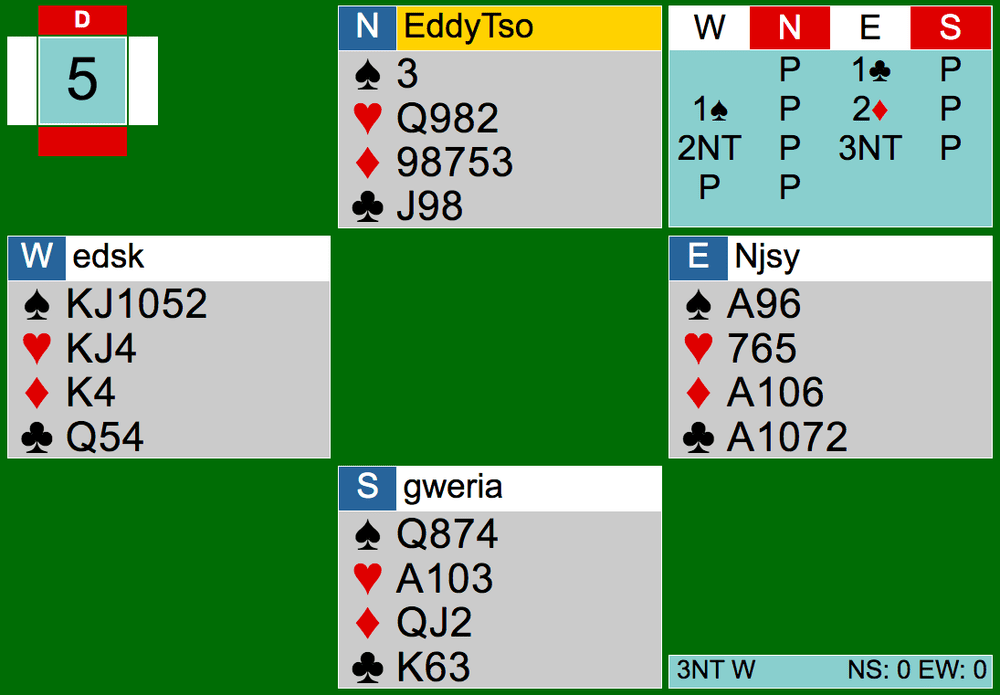
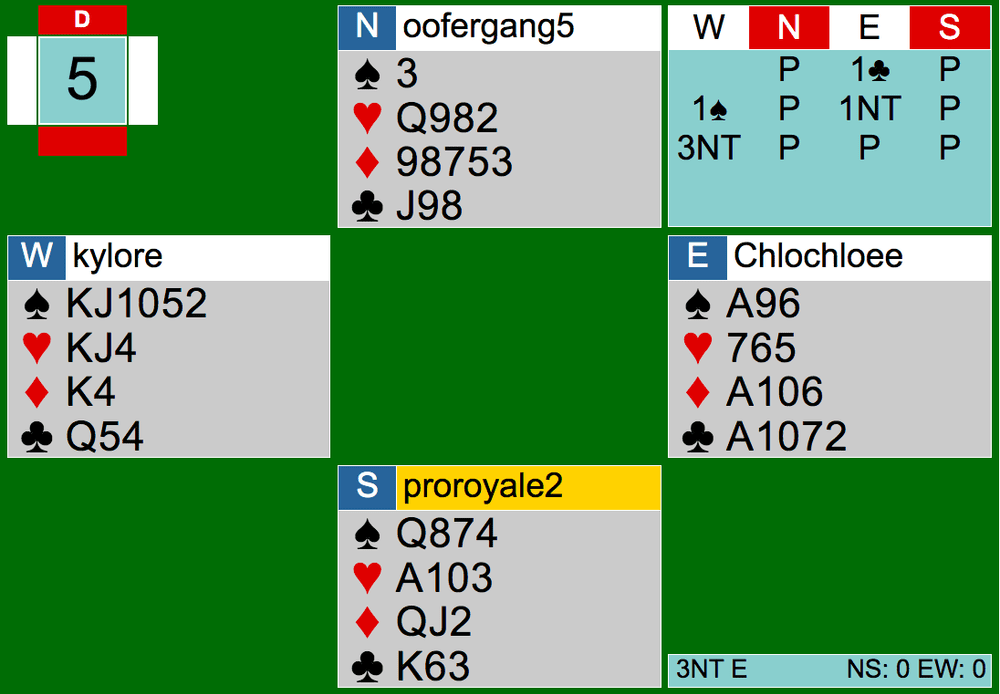
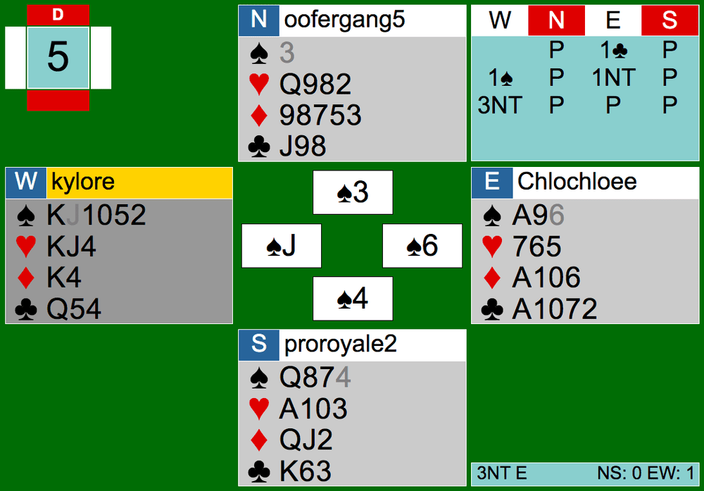

It’s August, meaning it’s back to school season! As players share their excitement and concerns towards distance learning through the BBO chats, let’s look at Board 5, where both tables were in a 3NT contract.


The bidding started off with 1C opening by East followed by a 1S response by West. At Team Fall’s table, East bid 2D holding a flat hand with 14 points. At Team Summer’s table, East chooses to rebid 1NT. Rebidding 1NT is the right call here because after a minor opening, the 1NT would show 12-14 points with a balanced hand, which is exactly what East has. The bidding continues after 2D in Team Fall’s table with a 2NT invite and Easts accepts to 3NT. Here instead of West just inviting to 2NT, West should just bid 3NT because 2NT is not forcing and East could pass with a minimum hand. The other table, Team Summer’s, did a nice job with the jump to game. The final contracts ended up in 3NT but since East in Team Fall’s table didn’t rebid 1NT and the other player in East did, the declarers and dummies are different.
At Team Fall’s table, North led the 9 of diamonds from 9 8 7 to the fifth. West took it with the King and began setting up spades, which is a good start. If you count your winners, you will take 5 spades with the Queen onside, 2 diamonds, possibly the KH if South has the Ace, and at least 2 clubs when the King is in South. 3NT shouldn’t be too hard, right?
The spades were played strangely here. West played low to the Ace, and a low spade back to KJTxx. Instead of taking the finesse, W decided to just take it with the King and lose to the Queen of spades. After losing to the Queen, West never got his 5th spade trick in the end. EW took the tricks they could and lost the rest. It was pretty straightforward.

At Team Summer’s table, the spades were also played strangely. The opening lead by South was fourth best from spades. EW was able to win the first trick with the Jack of spades on the board. It never occurred to East why North didn’t overtake the Jack of spades with the Queen. East didn’t realize that the Queen was in South and tried finessing North for the Queen by playing the ten of spades and ducking when the Queen didn’t fall. East could have known that the Queen is in South, not North, because just by the opening lead, East could tell that it was from fourth best. Secondly, when playing the ten from dummy to E, North shows out. East can overtake the ten with the Ace here and still be able to finesse South with the 9. No spades should have been lost. The rest of the play was straightforward.
When finessing, look for clues as to where the honor(s) is/are. You can find clues in leads, pitches, bidding, and other small details. When you are so close to making your contract yet so far, you should aim to finesse, because there is a 50% chance of you scoring another trick. Next time you declare, play attention to the specifics and try your best in guessing where the missing honor is.